Nuestro escudo CRS, la bandera roja y los colores institucionales
Los valores, el respeto y el uniforme
Los actos cívicos de reconocimiento y el himno
El sentido de pertenencia y la cercanía con cada familia
+
🧪 🌿 🤖 🎵
Lo que transformamos por dentro
Del pupitre y el tablero a los proyectos y retos reales
De memorizar a preguntar, explorar y crear
Del aula cerrada al aprendizaje al aire libre
De solo poner notas a acompañar el proceso de cada niño
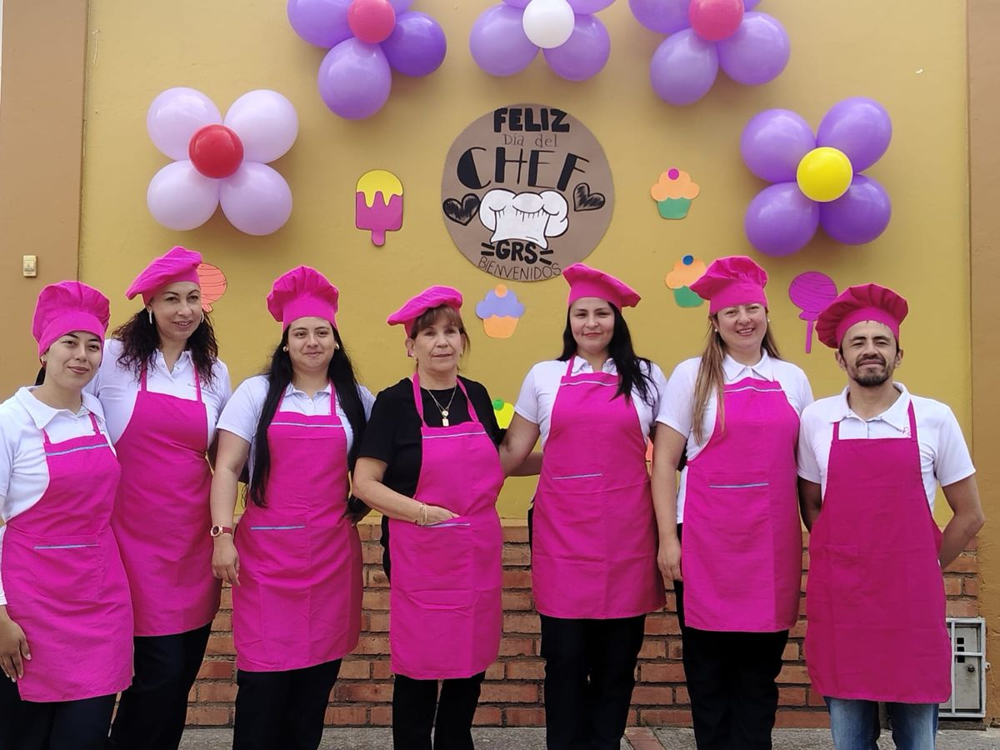
Desde 2011formando niños y niñas en Madrid Aprobación oficial: Resolución 010592 de 2011
Quiénes somos
Siempre hemos creído que aprender puede ser una aventura
El Colegio Gimnasio Real de la Sabana es un colegio privado y mixto de preescolar y básica primaria, ubicado en el centro de Madrid, Cundinamarca, que desde 2011 acompaña a las familias del municipio. Somos una comunidad unida, que acompaña a cada estudiante en su historia y en su manera de aprender.
La innovación no es nueva para nosotros. En 2012 aplicamos la metodología ABCDESPAÑOL del profesor Javier González Quintero, que enseña lectoescritura y matemáticas a través del juego, la autoevaluación y la coevaluación. En junio de 2012, tras la visita y evaluación del propio profesor González, el colegio recibió el aval como difusor de la metodología a nivel nacional y el reconocimiento como observatorio de la metodología para Cundinamarca. En 2013 la televisión francesa, en la serie 1.000 pioneros que cambian el mundo, grabó en nuestro colegio a los niños aprendiendo con esta metodología.
Video de la televisión francesa (2013), en francés. Nuestros estudiantes aparecen desde el minuto 0:50.
Hoy damos un paso más: nos transformamos en un colegio del siglo XXI, sin perder la identidad que nos hace Gimnasio Real.
Nuestra misión
Garantizar la formación integral de niños y niñas por medio de una educación con calidad, responsabilidad y respeto.
Nuestra filosofía
Vemos a cada niño como un ser completo, con una educación humanizante que cultiva la creatividad y el espíritu científico.
Nuestros valores
Amor
Tolerancia
Honestidad
Veracidad
Respeto
Solidaridad
Colaboración
Autoestima
Nuestra propuesta pedagógica
Ocho maneras de aprender de verdad
El niño en el centro. Aprendemos con las manos, la cabeza y el corazón.
🧩
Proyectos y retos reales
Partimos de preguntas de los niños y de problemas de su entorno. Investigan, construyen y presentan lo que descubren.
🔬
Ciencia y STEAM
Ciencia, tecnología, ingeniería, arte y matemáticas. Robótica y programación adaptadas a cada edad.
💛
Educación emocional
Aprendemos a reconocer lo que sentimos, a resolver conflictos con palabras y a convivir con respeto.
🌿
Naturaleza de la Sabana
Huerta, ecología y cuidado del agua. El aire libre también es un salón de clase.
🎨
Arte, música, cuerpo y juego
Pintar, cantar, moverse y jugar son formas serias de aprender y de expresarse.
💬
Bilingüismo progresivo
El inglés llega de forma natural, con canciones, juegos y proyectos, y crece año tras año.
🌱
Evaluación formativa
Acompañamos el proceso, no solo ponemos notas. Autoevaluación, coevaluación y retroalimentación constante.
🤝
Tecnología con sentido y familias
Usamos la tecnología para crear, no para distraer. Y las familias hacen parte de la comunidad de aprendizaje.
Niveles
Acompañamos los años más importantes
Desde los primeros pasos en el colegio hasta el final de la primaria.
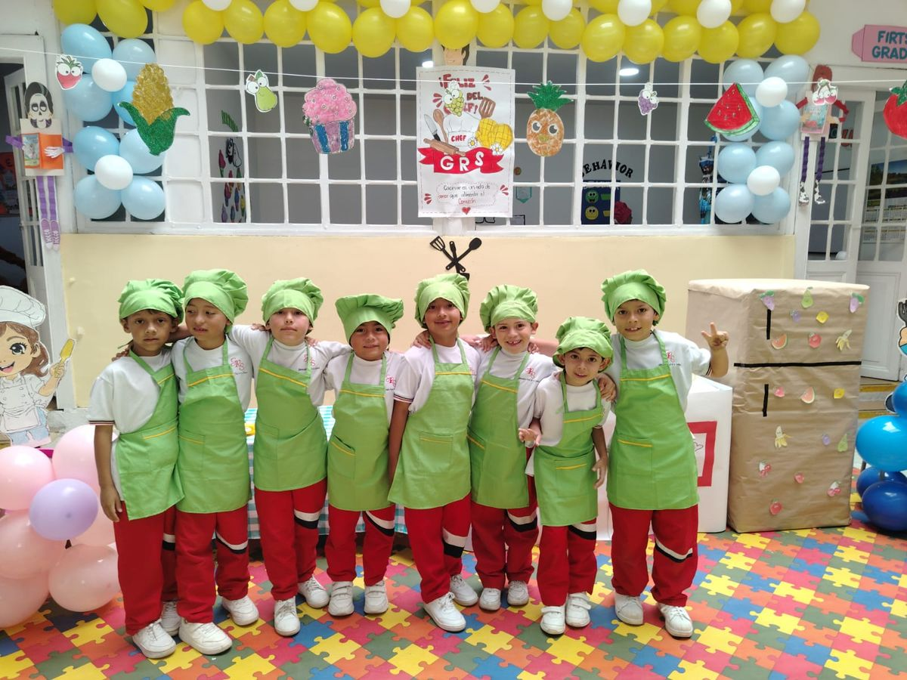
Preescolar: explorar, jugar y descubrir
El juego es el centro. Desarrollamos el lenguaje, la motricidad, la curiosidad y la autonomía en un ambiente cálido y seguro, con la lectoescritura y el pensamiento matemático que llegan jugando.
PrejardínLenguaje, juego y autonomía
JardínExploración y creatividad
TransiciónPreparación para la primaria
Edades de ingreso por grado: [POR CONFIRMAR]
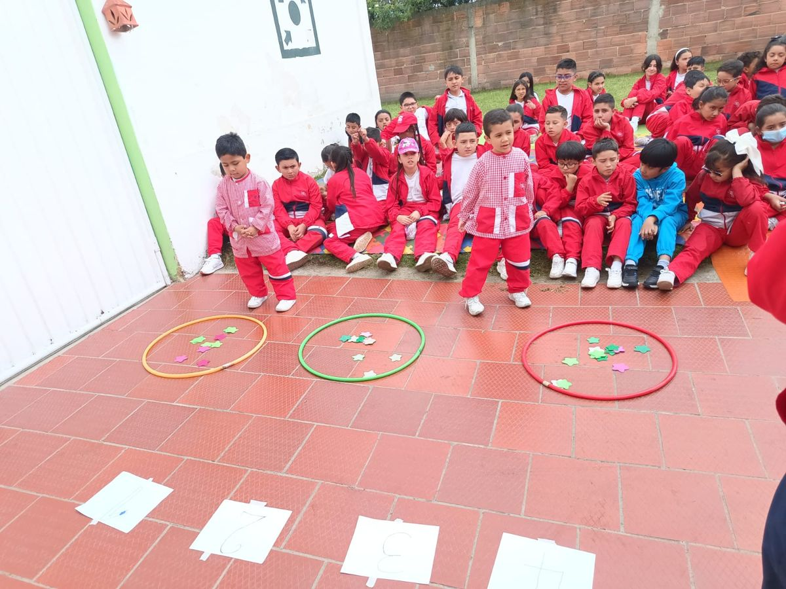
Primaria: preguntar, investigar y crear
Lectura, escritura, matemáticas, ciencias y sociales a través de proyectos que integran las áreas. Fortalecemos el pensamiento crítico, el trabajo en equipo y la responsabilidad.
Primero
Segundo
Tercero
Cuarto
Quinto
Un día en el Gimnasio Real
¿Cómo se vive un día de aprendizaje?
Un ejemplo de jornada. Horarios exactos: [POR CONFIRMAR]
Llegada
Bienvenida y círculo de la mañana
Nos saludamos, contamos cómo nos sentimos y planeamos el día juntos.
Lunes
Acto cívico de reconocimientos
Cantamos el himno y celebramos los logros, el esfuerzo y a quienes viven los valores del colegio.
Mañana
Hora del proyecto
Investigamos, construimos y resolvemos retos en equipo, integrando lenguaje, matemáticas y ciencias.
Descanso
Refrigerio y juego libre
Comer bien, moverse y jugar con los amigos también es parte de aprender.
Media jornada
Al aire libre
Huerta, observación de la naturaleza, deporte y experiencias en contacto con la Sabana.
Tarde
Arte, música, inglés o STEAM
Talleres para crear, expresarse, programar y descubrir nuevos talentos.
Cierre
¿Qué aprendí hoy?
Reflexionamos sobre lo aprendido, celebramos los logros y nos despedimos hasta mañana.
Espacios y experiencias
Lugares para aprender haciendo
Así aprendemos: dentro y fuera del aula, con las manos, los sentidos y la naturaleza.
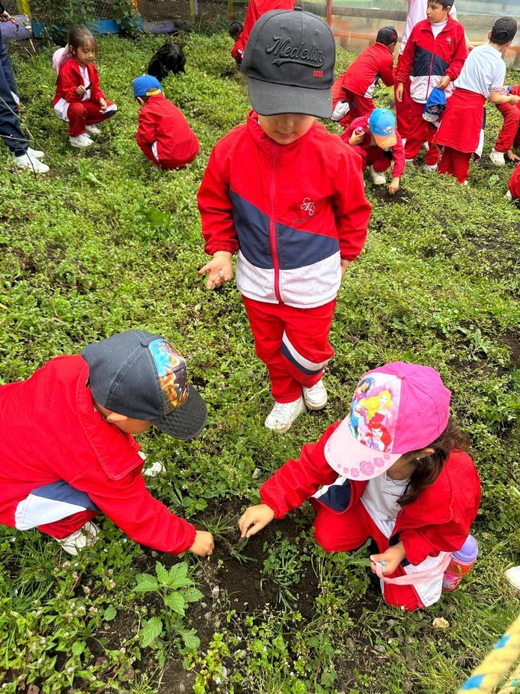
Sembrar y cuidar la tierraEcología, agua y respeto por la naturaleza de la Sabana.
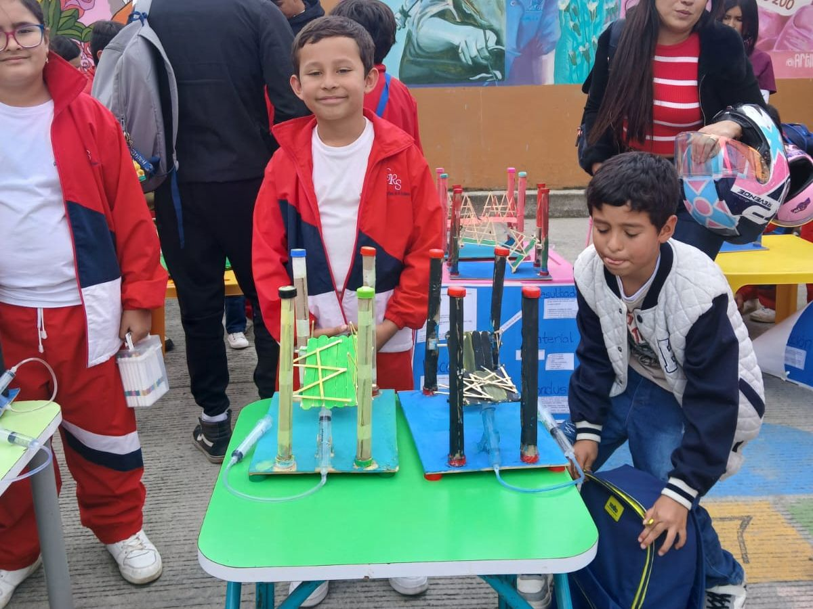
Feria de proyectosConstruir, experimentar y explicar lo que descubrimos.
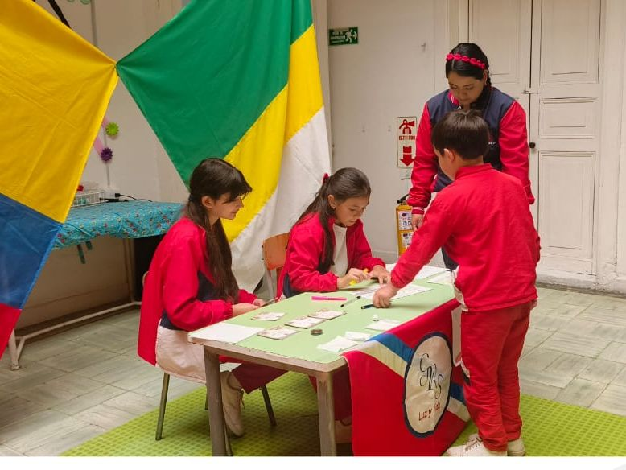
Aulas activasTrabajo en equipo, juego y pensamiento.
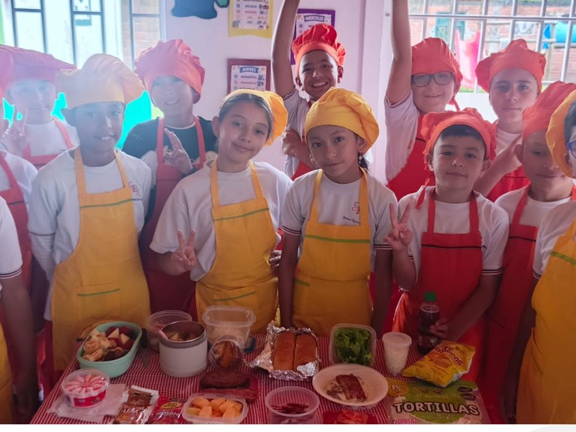
Día del ChefAprender cocinando: medir, crear y compartir.
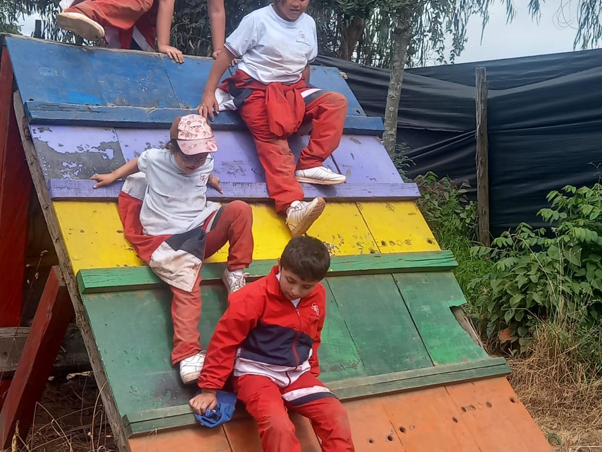
Juego y movimientoCuerpo activo, retos y confianza.
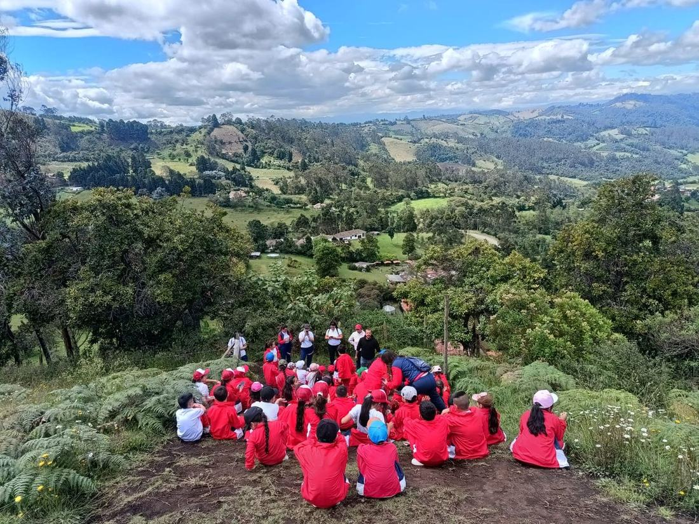
Salidas pedagógicasEl paisaje también es un salón de clase.
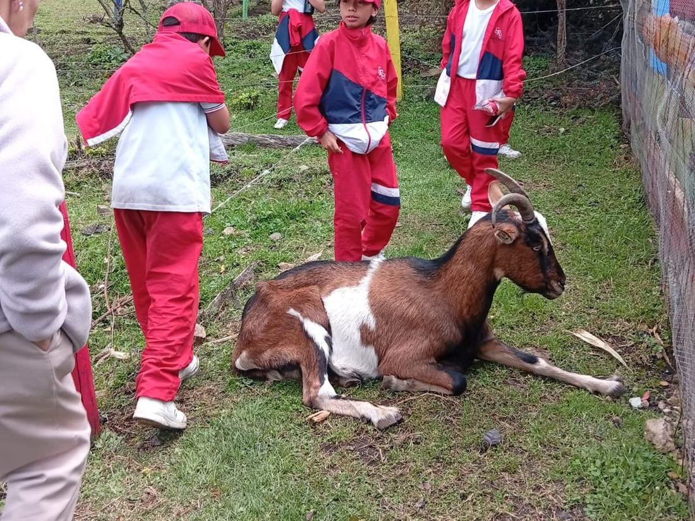
Contacto con los animalesObservar, cuidar y respetar a otros seres vivos.
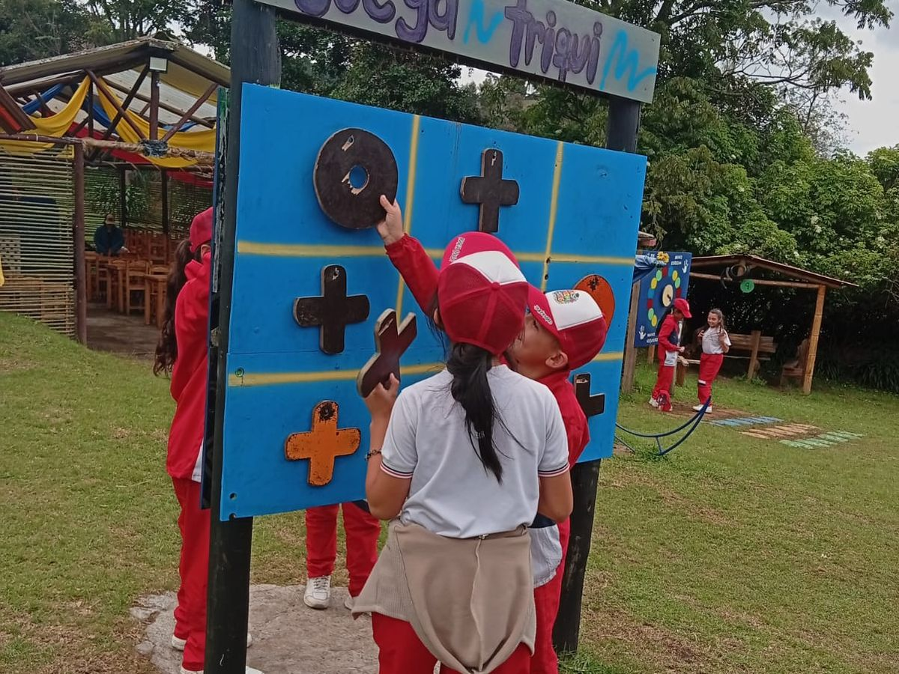
Juegos de pensamientoEstrategia, lógica y diversión en equipo.
Familias
Educamos juntos, en comunidad
La familia es la primera escuela. Por eso abrimos las puertas del colegio para que mamás, papás y acudientes acompañen de cerca el proceso de sus hijos.
👨👩👧
Comunidad de aprendizaje
Familias que participan en proyectos, ferias, salidas y celebraciones.
📚
Escuela de padres
Encuentros para conversar sobre crianza, emociones, hábitos y aprendizaje.
📲
Comunicación cercana
Canales claros y oportunos para saber cómo va cada niño y qué viene en el colegio.
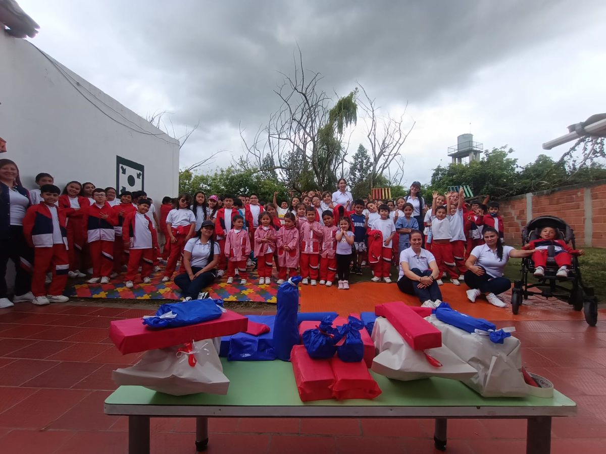
Admisiones 2027
Reserva el cupo de tu hijo en 3 pasos
Diligencia el formulario en línea y asegura el cupo de tu hijo a tiempo.
1
Diligencia el formulario
Llena la inscripción en línea desde tu celular. Recibirás un código de inscripción.
2
Paga en efectivo en el colegio
Acércate a secretaría con tu código y paga la inscripción dentro del plazo indicado.
3
¡Cupo guardado!
Con el pago registrado, el cupo de tu hijo queda reservado. Te contactaremos para los siguientes pasos.
Importante: el cupo solo queda guardado cuando se paga la inscripción. Si no se paga dentro del plazo, el cupo puede liberarse para otra familia.